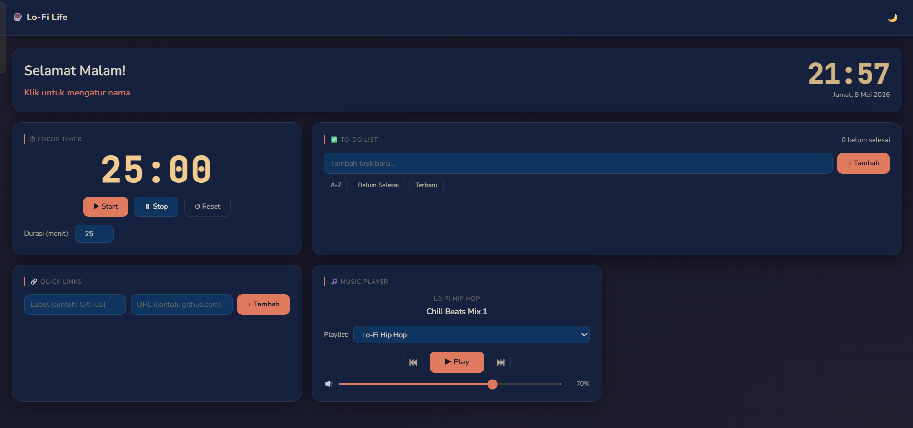
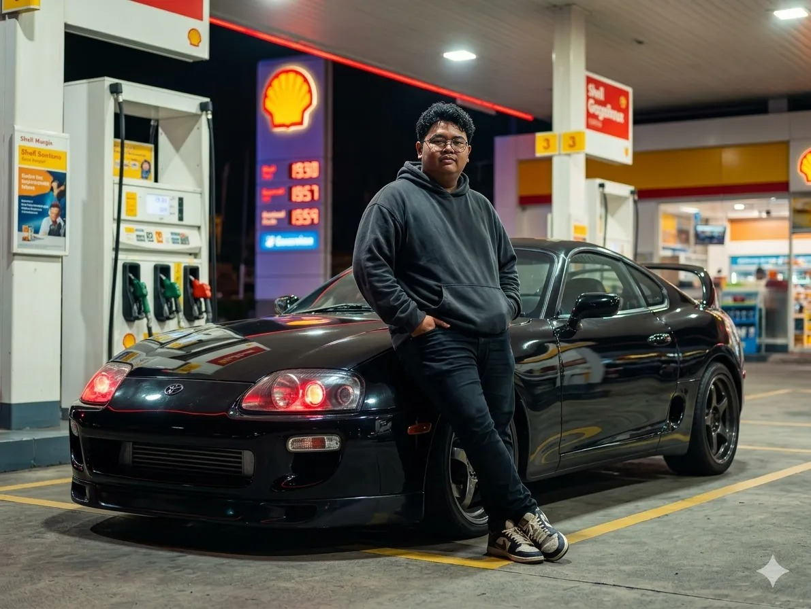

Galeri Pusaka

To-DO-List life Dashboard
Studi kasus: Mini Project Revou Coding Camp 2026

Pusaka Dua
Aplikasi manajemen tugas dengan penyimpanan lokal.
Pusaka Tiga
Platform portofolio estetik.
Seorang pengembang web yang memadukan logika dan estetika. Saya mengubah ide-ide menjadi entitas digital yang tidak hanya berfungsi secara efisien, namun juga memberikan pengalaman yang imersif dan tenang bagi penggunanya.

Membangun situs web responsif dan cepat menggunakan teknologi modern tanpa framework (HTML, CSS, JS murni).
Merancang antarmuka pengguna yang estetik, intuitif, dan nyaman dipandang mata.
Memastikan setiap pusaka digital berfungsi sempurna di berbagai dimensi perangkat.

Studi kasus: Mini Project Revou Coding Camp 2026
Aplikasi manajemen tugas dengan penyimpanan lokal.
Platform portofolio estetik.
"Ruang testimonial ini sedang menanti cerita perjalanan dari kolaborasi kita di masa depan..."